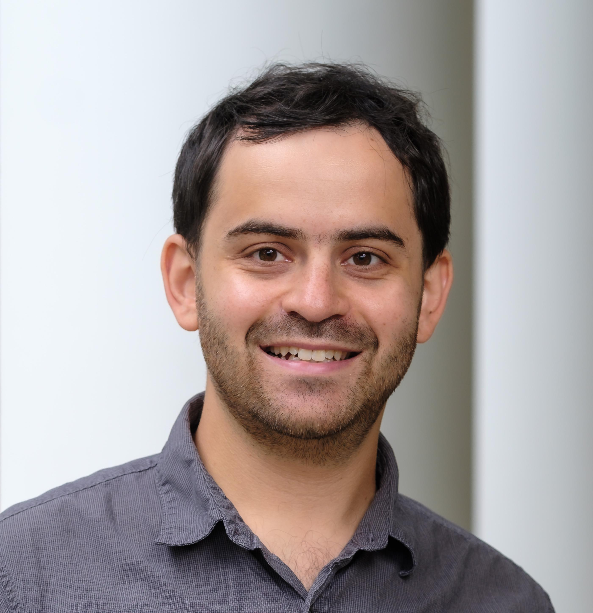

Yakov (Yasha) Berchenko-Kogan
Assistant Professor, Florida Institute of Technology
CV
Appointments
- Florida Institute of Technology, assistant professor, 2022–present.
- Pennsylvania State University, postdoctoral scholar with Vladimir Itskov, 2021–2022.
- University of Hawaii at Manoa, temporary assistant professor with Evan Gawlik, 2019–2021.
- Washington University in St. Louis, Chauvenet postdoctoral lecturer with Ari Stern, 2016–2019.
- MIT, Ph.D. under Tom Mrowka, 2016.
- Caltech, B.S. Mathematics with a minor in Control and Dynamical Systems, 2011.
Prospective Students
Please reach out to me if you are an undergraduate student interested in a capstone project or a graduate student interested in working with me.
Research Publications
- Y. Berchenko-Kogan and E. S. Gawlik, Blow-up Whitney forms, shadow forms, and Poisson processes, 2024.
- Y. Berchenko-Kogan and E. S. Gawlik, Finite element approximation of the Levi-Civita connection and its curvature in two dimensions, Foundations of Computational Mathematics, 24, 578–637, 2024.
- Y. Berchenko-Kogan, Symmetric bases for finite element exterior calculus spaces, Foundations of Computational Mathematics, 2023.
- Y. Berchenko-Kogan, Numerically computing the index of mean curvature flow self-shrinkers, Results in Mathematics 77, 17, 2022.
- Y. Berchenko-Kogan, Duality in finite element exterior calculus and Hodge duality on the sphere, Foundations of Computational Mathematics 21, 1153–1180, 2021.
- Y. Berchenko-Kogan and A. Stern, Charge-conserving hybrid methods for the Yang–Mills equations, SMAI Journal of Computational Mathematics 7, 97–119, 2021.
- Y. Berchenko-Kogan and A. Stern, Constraint-preserving hybrid finite element methods for Maxwell's equations, Foundations of Computational Mathematics 21, 1075–1098, 2021.
- Y. Berchenko-Kogan, Bounds on the index of rotationally symmetric self-shrinking tori, Geometriae Dedicata 213, 82–106, 2021.
- Y. Berchenko-Kogan, The entropy of the Angenent torus is approximately 1.85122, Journal of Experimental Mathematics 30 (4), 587–594, 2021.
- Y. Berchenko-Kogan, Duality in finite element exterior calculus, arXiv:1807.01161, 2018.
- Y. Berchenko-Kogan, Yang–Mills Replacement, Journal of Geometric Analysis 28 (4), 3603–3656, 2018.
- D. Shi, Y. Berchenko-Kogan, D. V. Zenkov, and A. M. Bloch, Hamel’s formalism for infinite-dimensional mechanical systems, Journal of Nonlinear Science 27 (1), 241–283, 2017.
- Y. Berchenko-Kogan, Minimum product set sizes in nonabelian groups, Journal of Number Theory 132 (10), 2316–2335, 2012.
- Y. Berchenko-Kogan, Uncovering the Lagrangian from observations of trajectories, Caltech senior thesis, 2011.
- Y. Berchenko-Kogan, Distance in the ellipticity graph, arXiv:1006.4853, 2010.
General Audience Publications
- Y. Berchenko-Kogan, More than math: The lasting benefits of summer programs, Imagine 21 (2), 20–21, 2013.
- Y. Berchenko-Kogan, What do grad students in math do all day, Math Horizons 20 (3), 18–19, 2013. (français, 日本語, português)
Selected Presentations
- Blow-up finite elements, SIAM Annual Meeting, 2024. (slides) (slides with overlays)
- Blow-up finite elements, Finite Element Circus, 2024. (slides) (slides with overlays)
- The combinatorics of finite element methods, colloquium, Florida Tech, 2023. (slides) (slides with overlays)
- The combinatorics of finite element methods, GallianFest, 2023. (slides) (slides with overlays)
- Numerical methods in differential geometry, colloquium, Florida Tech, 2022. (slides) (embedded videos)
- Duality and symmetry in finite element exterior calculus, Oberwolfach, 2022. (slides) (slides with overlays)
- Charge-conserving hybrid finite element methods for Maxwell's equations and the Yang–Mills equations, Canadian Applied and Industrial Mathematics Society, 2022. (slides)
- Symmetry in finite element exterior calculus, Finite Element Circus, 2022. (slides) (slides with overlays)
- Inferring olfactory space from glomerular response data, COSYNE, 2022. (poster)
- Geometry and computation, colloquium, 2021. (slides) (embedded videos)
- Numerically computing the entropy and index of mean curvature flow self-shrinkers, Geometric Analysis Festival, 2021. (recording) (slides)
- Duality in finite element exterior calculus and the Hodge star on the sphere, AMS sectional meeting, University of Hawaii, special session on numerical methods for PDEs, 2019. (slides) (slides with overlays)
- Numerical methods in geometric PDE, colloquium, 2019. (slides with overlays) (embedded videos)
- Duality in finite element exterior calculus, Finite Element Circus, 2018. (slides) (slides with overlays)
- Hamel's formalism for infinite-dimensional mechanical systems, Foundations of Computational Mathematics, 2017. (poster)
- Yang-Mills replacement, Simons Center for Geometry and Physics, mathematics of gauge fields seminar, 2017. (video recording)
- Yang-Mills replacement, AMS sectional meeting, Rutgers, special session in geometric analysis, 2015. (slides) (slides with overlays)
- Uncovering the Lagrangian of a system from discrete observations, JMM, AMS session on dynamical systems, 2012. (slides) (slides with overlays)
- Distance in the ellipticity graph, JMM, AMS session on group theory, 2011. (slides) (slides with overlays)
Notes